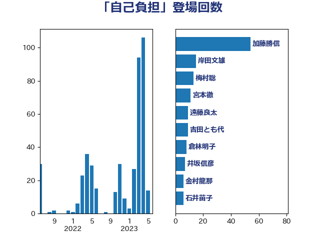

単語「自己負担」

| 加藤勝信 | 自由民主党 | 54 回 |
| 岸田文雄 | 自由民主党 | 15 回 |
| 梅村聡 | 日本維新の会 | 13 回 |
| 宮本徹 | 日本共産党 | 11 回 |
| 遠藤良太 | 日本維新の会 | 9 回 |
| 吉田とも代 | 日本維新の会 | 9 回 |
| 倉林明子 | 日本共産党 | 8 回 |
| 井坂信彦 | 立憲民主党 | 7 回 |
| 金村龍那 | 日本維新の会 | 6 回 |
| 石井苗子 | 日本維新の会 | 6 回 |
| 田中健 | 国民民主党 | 6 回 |
| 柚木道義 | 立憲民主党 | 6 回 |
| 後藤茂之 | 自由民主党 | 6 回 |
| 高木かおり | 日本維新の会 | 5 回 |
| 舩後靖彦 | れいわ新選組 | 5 回 |
| 山田勝彦 | 立憲民主党 | 5 回 |
| 小沢雅仁 | 立憲民主党 | 5 回 |
| 田村憲久 | 自由民主党 | 4 回 |
| 本田顕子 | 自由民主党 | 4 回 |
| 小川淳也 | 立憲民主党 | 4 回 |
| 小倉將信 | 自由民主党 | 4 回 |
| 塩村あやか | 立憲民主党 | 4 回 |
| 吉田統彦 | 立憲民主党 | 4 回 |
| 音喜多駿 | 日本維新の会 | 3 回 |
| 窪田哲也 | 公明党 | 3 回 |
| 福重隆浩 | 公明党 | 3 回 |
| 池下卓 | 日本維新の会 | 3 回 |
| 櫛渕万里 | れいわ新選組 | 3 回 |
| 林芳正 | 自由民主党 | 3 回 |
| 本村伸子 | 日本共産党 | 3 回 |
| 川田龍平 | 立憲民主党 | 3 回 |
| 山添拓 | 日本共産党 | 3 回 |
| 天畠大輔 | れいわ新選組 | 3 回 |
| 伊佐進一 | 公明党 | 3 回 |
| 高橋千鶴子 | 日本共産党 | 2 回 |
| 高橋光男 | 公明党 | 2 回 |
| 長友慎治 | 国民民主党 | 2 回 |
| 野田聖子 | 自由民主党 | 2 回 |
| 緑川貴士 | 立憲民主党 | 2 回 |
| 竹内真二 | 公明党 | 2 回 |
| 石橋通宏 | 立憲民主党 | 2 回 |
| 田村まみ | 国民民主党 | 2 回 |
| 浜口誠 | 国民民主党 | 2 回 |
| 東徹 | 日本維新の会 | 2 回 |
| 星北斗 | 自由民主党 | 2 回 |
| 庄子賢一 | 公明党 | 2 回 |
| 岩渕友 | 日本共産党 | 2 回 |
| 尾身朝子 | 自由民主党 | 2 回 |
| 宮路拓馬 | 自由民主党 | 2 回 |
| 吉田久美子 | 公明党 | 2 回 |
| 古屋範子 | 公明党 | 2 回 |
| 勝部賢志 | 立憲民主党 | 2 回 |
| 佐藤英道 | 公明党 | 2 回 |
| 高木宏壽 | 自由民主党 | 1 回 |
| 馬場伸幸 | 日本維新の会 | 1 回 |
| 鈴木庸介 | 立憲民主党 | 1 回 |
| 鈴木俊一 | 自由民主党 | 1 回 |
| 金城泰邦 | 公明党 | 1 回 |
| 野間健 | 立憲民主党 | 1 回 |
| 野田国義 | 立憲民主党 | 1 回 |
| 足立康史 | 日本維新の会 | 1 回 |
| 赤池誠章 | 自由民主党 | 1 回 |
| 西村明宏 | 自由民主党 | 1 回 |
| 西岡秀子 | 国民民主党 | 1 回 |
| 萩生田光一 | 自由民主党 | 1 回 |
| 荒井優 | 立憲民主党 | 1 回 |
| 若松謙維 | 公明党 | 1 回 |
| 芳賀道也 | 国民民主党 | 1 回 |
| 舟山康江 | 国民民主党 | 1 回 |
| 臼井正一 | 自由民主党 | 1 回 |
| 自見はなこ | 自由民主党 | 1 回 |
| 神谷政幸 | 自由民主党 | 1 回 |
| 神津たけし | 立憲民主党 | 1 回 |
| 石井正弘 | 自由民主党 | 1 回 |
| 矢倉克夫 | 公明党 | 1 回 |
| 田畑裕明 | 自由民主党 | 1 回 |
| 田村智子 | 日本共産党 | 1 回 |
| 田嶋要 | 立憲民主党 | 1 回 |
| 田名部匡代 | 立憲民主党 | 1 回 |
| 漆間譲司 | 日本維新の会 | 1 回 |
| 湯原俊二 | 立憲民主党 | 1 回 |
| 泉田裕彦 | 自由民主党 | 1 回 |
| 柴田巧 | 日本維新の会 | 1 回 |
| 杉尾秀哉 | 立憲民主党 | 1 回 |
| 本庄知史 | 立憲民主党 | 1 回 |
| 末松信介 | 自由民主党 | 1 回 |
| 木村英子 | れいわ新選組 | 1 回 |
| 志位和夫 | 日本共産党 | 1 回 |
| 後藤祐一 | 立憲民主党 | 1 回 |
| 平木大作 | 公明党 | 1 回 |
| 市村浩一郎 | 日本維新の会 | 1 回 |
| 岡本あき子 | 立憲民主党 | 1 回 |
| 山田美樹 | 自由民主党 | 1 回 |
| 山崎正恭 | 公明党 | 1 回 |
| 山井和則 | 立憲民主党 | 1 回 |
| 小池晃 | 日本共産党 | 1 回 |
| 宮本岳志 | 日本共産党 | 1 回 |
| 奥野総一郎 | 立憲民主党 | 1 回 |
| 大西健介 | 立憲民主党 | 1 回 |
| 塩田博昭 | 公明党 | 1 回 |
| 城井崇 | 立憲民主党 | 1 回 |
| 嘉田由紀子 | 無所属 | 1 回 |
| 吉良よし子 | 日本共産党 | 1 回 |
| 住吉寛紀 | 日本維新の会 | 1 回 |
| 中谷一馬 | 立憲民主党 | 1 回 |
| 中川郁子 | 自由民主党 | 1 回 |
| 中島克仁 | 立憲民主党 | 1 回 |
| 上野通子 | 自由民主党 | 1 回 |
| 一谷勇一郎 | 日本維新の会 | 1 回 |